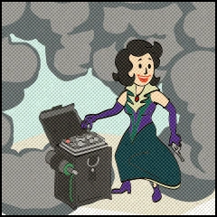

The Mistress of Mystery
ザ・ミストレス・オブ・ミステリー
「オーダー・オブ・ミステリーの運命を知れ。」
背景
ザ・ミストレス・オブ・ミステリーは、『Fallout 76』のサイドクエストで、オーダー・オブ・ミステリーのクエストラインの最終章です。
クエスト完了時に実績/トロフィー「Mistress of Mystery」（20G / シルバー）が解除されます。
オリヴィア・リバーズは母シャノンとオーダー・オブ・ミステリーを裏切り、レイダーたちに情報を売り渡しました。
最終的に、オーダーに何が起きたのか？ オリヴィアとシャノン・リバーズはどうなったのか？
オリヴィアのログインを手に入れたVault居住者は、ヘッドミストレスのオフィスにアクセスし、ついに答えを得ることができるはずです。
実績 / トロフィー

ウォークスルー
オリヴィアのコードを手に入れたプレイヤーは、ターミナルにアクセスしてオリヴィアとしてログインすることで、ヘッドミストレスのオフィスに入ることができます。
管理メニューからアクセスを許可しましょう。
ヘッドミストレスのターミナルでは、オーダーの悲しい歴史の全貌を知ることができます。
ただし、クエストを進めるために必要なのは最初のエントリだけです。
そこには、オリヴィアが母親と世界の頂上の北東にある人里離れた場所——二人だけの「特別な場所」で会おうとしていたことが記されています。
プレイヤーはその場所に向かい、二つの遺体からアイテムを回収します。
その後、リバーサイド邸に戻り、シャノン・リバーズとしてログインして最終昇進を承認すれば、クエストラインは完結します。
任意目標：「特別な場所」の手がかり
オリヴィアとシャノンが最後に会った場所について更に知りたい場合、任意目標のマーカーに従いましょう。
シャノンの書斎にあるターミナルの「Personal Journal」から2077年6月28日のエントリを読みます。
そこからマナーの2階にある、火災で焼け落ちた部屋に向かい、オリヴィアのターミナルにアクセスします。
損傷したターミナルから復元された2077年9月のジャーナルエントリに、セネカ・ロックス近くの二人のキャンプ地への想いが綴られています。
クエストステージ
登場作品
ザ・ミストレス・オブ・ミステリーは『Fallout 76』にのみ登場するサイドクエストです。
オーダー・オブ・ミステリーのクエストラインの最終章にふさわしい、静かで重い結末です。
ヘッドミストレスのターミナルで明かされるオーダーの全史——シャノンの苦悩、メンバーの相次ぐ失踪、そしてオリヴィアの裏切りの全貌。
リバーサイド邸のホロテープで断片的に見えていた物語の全体像がここで初めて繋がります。
そしてセネカ・ロックスへ向かい、二人の遺体を見つける瞬間。
母と娘が「特別な場所」——かつて家族として過ごしたキャンプ地で、最後の対峙を迎えたという事実。
二人は戦い、共に倒れた。
任意目標でシャノンとオリヴィアのジャーナルを読むと、さらに胸を打たれます。
2077年の夏に家族の思い出として綴られていた「特別な場所」が、最終的に母娘の決戦場になったのですから。
最後にリバーサイド邸に戻り、シャノンのログインで自分の昇進を承認する——誰もいない施設で、一人きりのミステリーの女主人になる。
その寂寥感がこのクエストラインの完璧な終わり方です。
This article was created by translating and editing The Mistress of Mystery from Nukapedia: The Fallout Wiki.
Licensed under the Creative Commons Attribution-Share Alike License (CC BY-SA 3.0).
コミュニティ維持のため、寄付を受け付けております。
> COMMENTS